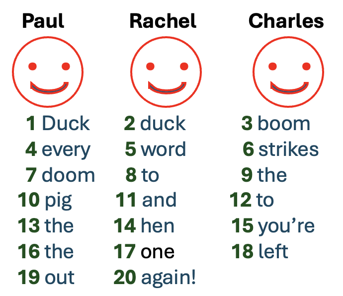

[PI047] Duck, Duck, Out!
The Problem
 "Duck, duck, boom, every word strikes doom, to the pig and to the hen, you're the one left out again!"
"Duck, duck, boom, every word strikes doom, to the pig and to the hen, you're the one left out again!"
Who doesn’t remember playing elimination rhymes as a child? The idea is simple. The rhyme above has 20 words:
"Duck, duck, boom, every word strikes doom, to the pig and to the hen, you're the one left out again!" 1 2 3 4 5 6 7 8 9 10 11 12 13 14 15 16 17 18 19 20
Three kids — Paul, Rachel, and Charles — decide to play this game, standing in a circle in that order. Paul starts reciting the rhyme, pointing to one child per word. Once he reaches the last person, he continues from the beginning until the rhyme ends.

Figure 1 - Example with 3 children.
In the first round, Paul is the one left out. Then he leaves the circle, and the next round starts with Rachel. In the second round, Rachel gets out, and poor Charles ends up losing.
Charles isn’t happy about this. So, knowing you’re good with programming, he comes to you for help. For a given initial configuration of players and a rhyme, he wants to know if he’ll lose the game or not. But there's a catch: the rhyme isn't always the same. Sometimes it’s long, other times it's short (e.g., "Duck, duck, out you go" has only 7 words). Can you help him?
Input
The first line contains an integer N — the number of test cases.
Each test case consists of two lines:
- The first line is the rhyme (up to 50 words, made of letters and spaces, no punctuation).
- The second line starts with an integer K (0 < K < 100), followed by K names (one-word names only), listing the children in order.
You may assume the name Charles always appears among the players.
Each word in the rhyme is separated by a space. Words contain only letters (uppercase or lowercase), and names are also space-separated.
Output
For each test case, print one of the following:
Charles did not survive– if Charles ends up being eliminatedCharles survived (poor NAME!)– if Charles survives, andNAMEis the player who lost
Example Input/Output
| Input | Output |
|---|---|
2 Duck duck boom every word strikes doom to the pig and to the hen you're the one left out again 3 Paul Rachel Charles Duck duck out you go 4 Charles Fred Peter Edward |
Charles survived (poor Paul!) Charles did not survive |
suggestion:You can start with this code.
#include <stdio.h>
#include <string.h>
#define FALSE 0
#define TRUE 1
#define SKIP_EOL {while (getchar()!='\n') ;}
int readAndCountWords() {
char ch= getchar();
int nwords = 0;
while (ch!='\n') {
while ((ch=getchar())!=' ' && ch!='\n') ;
nwords++;
while (ch!='\n' && (ch=getchar()==' '));
}
return nwords;
}
int main() {
int ncases, nwords, npersons, pos;
int i, j;
scanf("%d",&ncases);
SKIP_EOL; // skip end_of_line
for (int c=0; c<ncases; c++) {
nwords= readAndCountWords();
// read persons
// Do calculation
}
O problema
"Pim, Pam, Pum, cada bola mata um, p'ra galinha e para o peru quem se livra és mesmo tu"
Quem não se lembra de ter feito este jogo quando era pequeno? A ideia é muito simples. A frase atrás descrita tem 19 palavras:
"Pim, Pam, Pum, cada bola mata um, p'ra galinha e para o peru quem se livra és mesmo tu" 1 2 3 4 5 6 7 8 9 10 11 12 13 14 15 16 17 18 19
3 crianças resolveram jogar este jogo, o Paulo, a Raquel e o Carlos, que estão dispostas por esta ordem. O Paulo começa a dizer a frase, e em cada palavra vai apontando para as pessoas. Ao chegar ao fim da lista de pessoas, volta ao início, a ele mesmo, como exemplificado.

Figura 1 - Exemplo do jogo do "Pim, Pam, Pum" com 3 crianças.
Quem se livrava no início era o Paulo. Agora imagina que o jogo continuava. A pessoa que se livrou sai da lista, e a contagem recomeça na próxima pessoa (neste caso a Raquel). Quem se livrava a seguir era a Raquel e o Carlos, coitado, era o que não se livrava.
Descontente com isto, o Carlos, sabendo que és um bom programador, resolveu pedir-te ajuda. O que ele quer saber é, dada uma configuração inicial, se ele irá perder o jogo. O pior é que ele não sabe que frase vai ser usada. Por vezes e aquela frase comprida, outras vezes é uma mais pequena (como por exemplo, "Pim, Pam, Pum, quem se livra és tu", que neste caso teria 7 palavras). Podes ajudá-lo?
Input
A primeira linha contém um número N indicando o número de casos a analisar-
De seguida vêm N casos, cada um definido por duas linhas:
- Na primeira vez a frase que vai ser usada para a contagem (com não mais do que 50 palavras)
- Na segunda vem um número K (0<K<100), indicando o número de crianças que vão jogar o jogo, logo seguido de K nomes, indicando o nome das crianças.
Podes assumir que um dos nomes (que são sempre formados por uma única palavra)
será sempre "Carlos" e que a frase será apenas constituída
por letras (maísculas ou minúsculas, mas sem acentos) e espaços (para efeitos de contagem, uma palavra é uma sequência
de caracteres delimitada por espaços ou mudanças de linha).
Output
Para cada caso, vem uma linha de output:"O Carlos nao se livrou", indicando que o Carlos perde o jogo"O Carlos livrou-se (coitado do NOME!)", ondeNOMEindica a pessoa que perde o jogo.
Exemplo de input/output
| Input | Output |
|---|---|
2 Pim Pam Pum cada bola mata um pra galinha e para o peru quem se livra es mesmo tu 3 Paulo Raquel Carlos Pim Pam Pum quem se livra es tu 4 Fernando Eduardo Pedro Carlos |
O Carlos nao se livrou O Carlos livrou-se (coitado do Pedro!) |
sugestão:Pode começar com o código seguinte.
#include <stdio.h>
#include <string.h>
#define FALSE 0
#define TRUE 1
#define SKIP_EOL {while (getchar()!='\n') ;}
int readAndCountWords() {
char ch= getchar();
int nwords = 0;
while (ch!='\n') {
while ((ch=getchar())!=' ' && ch!='\n') ;
nwords++;
while (ch!='\n' && (ch=getchar()==' '));
}
return nwords;
}
int main() {
int ncases, nwords, npersons, pos;
int i, j;
scanf("%d",&ncases);
SKIP_EOL; // skip end_of_line
for (int c=0; c<ncases; c++) {
nwords= readAndCountWords();
// read persons
// Do calculation
}
Content by Fernando Silva and Vanessa Silva (DCC/FCUP), copied from the original website.